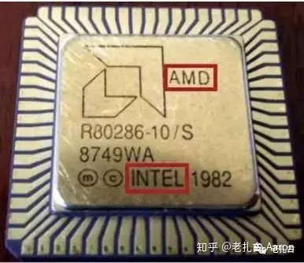

最近在学王爽老师的《汇编语言》，看到了整本书都是以8086CPU为示例，就想着买一块8086CPU收藏一下
本来以为会很便宜，但是一看价格将近70块我的天呢1978年的东西都这么贵了吗...
不过还是买了2块，一个D8086，一个P8086
下面是我买的8086CPU的照片

这是Intel D8086 CPU，陶瓷封装，拿在手里很有分量，手感也不错，贵了一点，到手价68大洋

这是Intel P8086 CPU，塑料封装，手感没有D8086好，质量也轻很多（但是它便宜啊，只有9.5大洋）
这块CPU是Intel公司在1978年推出的第一款16位CPU，也是第一款x86架构的CPU， 我们用的电脑的CPU只要是Intel或者AMD的一般都是x64架构（x86架构的64位模式变体）
其实一般我们说x86都指的是32位而并非16位，这是因为Intel的8086改进版80386CPU的成功所导致的
和现代CPU比起来，这颗CPU的性能差远了，以我家里的一台Windows笔记本所含有的i7-1260P相比较
| CPU | 架构 | 制造工艺 | 时钟频率 | 核心数 | 线程数 | 功耗 | 最大支持内存 |
|---|---|---|---|---|---|---|---|
| i7-1260P | x64 | Intel 7(10nm) | 3.8 GHz | 12 | 16 | 45W | 64GB |
| 8086CPU | x86 | 3微米 | 5 MHz | 1 | 1 | 5W | 1MB |
由此可见两个CPU的差距是十分大的
但是这颗CPU是Intel公司的第一款16位CPU，也是第一款x86架构的CPU，对于计算机历史的发展有着十分重要的意义
有趣的是，这块CPU承载着Intel公司和AMD公司两家芯片大厂的爱恨情仇
Intel公司在1978年推出了这颗CPU，但是由于当时的市场并不需要16位的CPU，所以这颗CPU并没有取得很大的成功
IBM公司想要订购这款CPU，奈何Intel的产能不足，被迫拉AMD入伙
当时AMD并没有x86架构技术的授权，而IBM的撮合让AMD搞来了x86架构的授权
这也造成了一个结果，那就是生产的8086和80286CPU（改进版）同时出现了两家冤家对头的logo
这是AMD和Intel的80286CPU，可以看到两家公司的logo都在上面
这是因为AMD和Intel都有x86架构的授权，所以两家公司都可以生产x86架构的CPU
但是我买的两块CPU都是Intel公司自己生产的，所以只有Intel的logo
然后AMD靠着仿制Intel的推出CPU艰难存活，双方爆发了法庭大战，但是AMD胜诉（当时没有半导体保护法）
于是AMD开始基于x86自研（虽然直到苏妈上任之前AMD除了速龙就亏得连总部大楼都卖了...）
最后总结一下，虽然这是一颗古老的且无用的CPU，但是它在芯片的发展史上是里程碑一般的存在